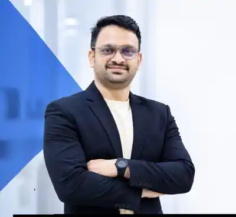

À propos de COREBIQ
Notre fondateur
Mohammed Shanid C M
Fondateur – COREBIQ
Fiscaliste · Développeur · Entrepreneur
16+Années d’expérience
M.ComMaster en commerce
Mohammed Shanid C M est titulaire d’un master en commerce (M.Com). Professionnel de la fiscalité, développeur passionné et entrepreneur, il possède plus de 16 ans d’expérience dans les opérations commerciales, la fiscalité, la conformité et les services professionnels.

La vision
La vision
Sa vision consiste à rapprocher les besoins des entreprises et la technologie en créant des solutions pratiques, évolutives et intelligentes qui les aident à travailler plus efficacement, à croître plus rapidement et à accomplir davantage.

La philosophie du fondateur
La technologie ne doit pas rendre les affaires plus compliquées. Elle doit rendre chaque entreprise plus simple, plus intelligente et plus efficace.
Mohammed Shanid C MFondateur – COREBIQ
Contactez-nous
COREBIQ